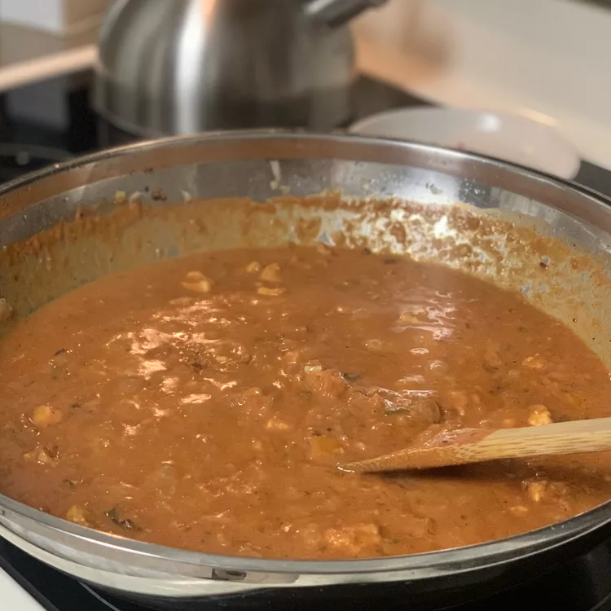

Home
Paneer Tikka Masala

Description
Paneer Tikka Masala is a popular Indian dish made with paneer (cottage
cheese) and spices. It is a flavorful and aromatic dish that is often
served with rice or naan.
Ingredients
- 1/2 cup chopped onions
- 1/2 cup chopped tomatoes
- 1/2 cup chopped green chillies
- 1/2 cup chopped garlic
- 1/2 cup chopped ginger
- 1/2 cup chopped coriander
- 1/2 cup chopped chilli powder
- 1/2 cup chopped turmeric
- 1/2 cup chopped cumin
- 1/2 cup chopped paprika
- 1/2 cup chopped cayenne pepper
- 1/2 cup chopped turmeric
- 1/2 cup chopped cumin
- 1/2 cup chopped paprika
- 1/2 cup chopped cayenne pepper
Steps
- Gather all ingredients.
-
Melt butter in a skillet over medium heat. Add paneer cubes; cook and
stir until golden, about 5 minutes.
-
Add onions, bell pepper, jalapeños, ground cashews, garlic paste, ginger
paste, cayenne pepper, cumin, coriander, and garam masala; cook and stir
until well combined and fragrant, about 1 minute.
-
Mix tomato sauce, half-and-half, and salt into paneer mixture; simmer
until thickened, about 30 minutes.